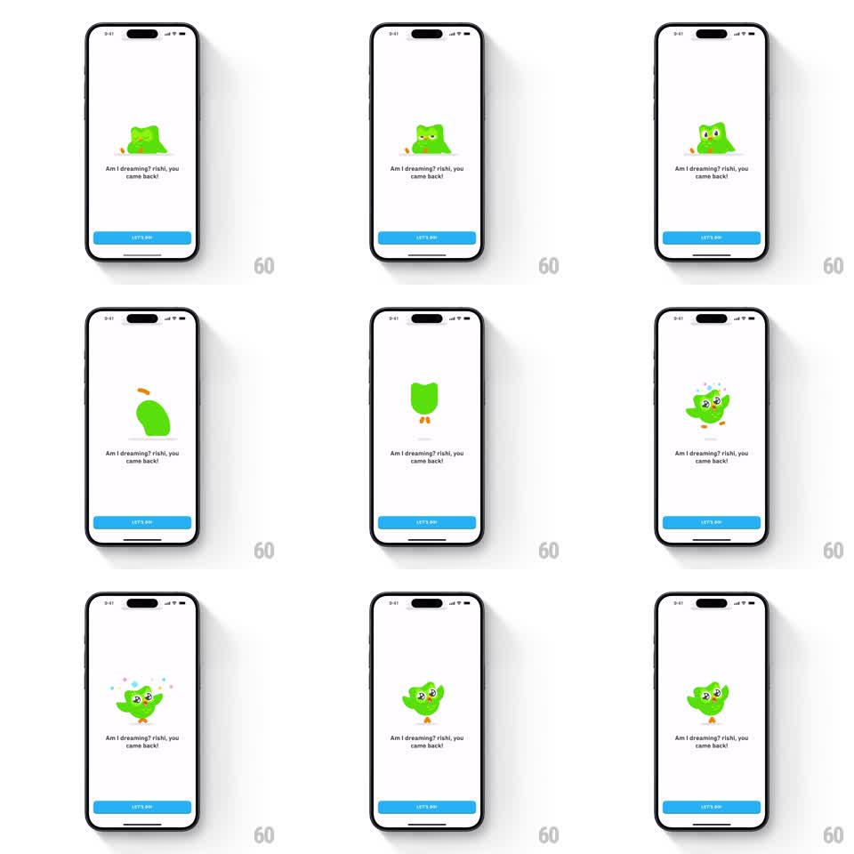

Media
Frame-by-frame

Rebuild this animation 1:1: Duolingo's welcome-back - on a white screen, the Duo owl wakes up as a blob, spins in the air, and lands as the full mascot with sparkles and confetti, over the message "Am I dreaming? rishi, you came back!" with a blue "LET'S GO!" button.

Rebuild this animation 1:1: Duolingo's welcome-back - on a white screen, the Duo owl wakes up as a blob, spins in the air, and lands as the full mascot with sparkles and confetti, over the message "Am I dreaming? rishi, you came back!" with a blue "LET'S GO!" button. ## Integration Integration: stack-agnostic spec - springs given as stiffness/damping, timed motions as duration + curve; map every value to your framework and animation library of choice. ## Scene White screen. Center: the Duo owl animation stage - starting as a small sleeping green blob with eyes closed. Message below: "Am I dreaming? rishi, you came back!" Blue "LET'S GO!" button pinned at the bottom. ## Motion spec Pattern: mascot wake-up spin with confetti landing. - The blob sleeps (gentle squash breathing, scaleY 1 -> 0.95, 1.6s, two cycles) then its eyes pop open. - It launches upward (translateY -60pt, 350ms ease-out) tucking into a spinning ball shape (rotation 720deg over 500ms, squash on launch, stretch at apex). - At the apex it unfolds back into the full owl - wings out, eyes sparkling (star pupils) - and drops to the ground (300ms ease-in) with a landing squash (scaleY 0.8 -> 1, spring ~340/14). - Confetti and sparkle stars burst on landing (10-12 pieces, radial 450ms, gravity fall) in blue, green, and yellow. - Idle: the owl bounces in place happily (translateY -6pt hops, 900ms, wings flapping each hop). ## Calibration - The spin is the payoff - fast, one clean double rotation, no wobble. - The message and button stay static; all motion is the mascot. ## Reduced motion The owl fades from sleeping to celebrating pose with a small sparkle (250ms). ## Don't miss - The eyes get star sparkles exactly at the unfold - that is the delight beat. - The landing shadow scales with the drop to ground the character.